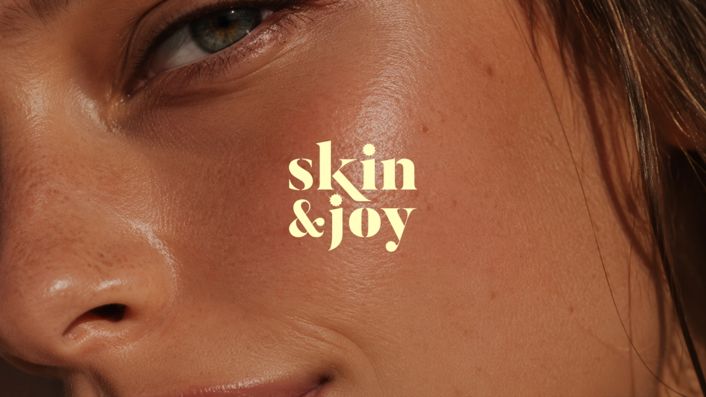
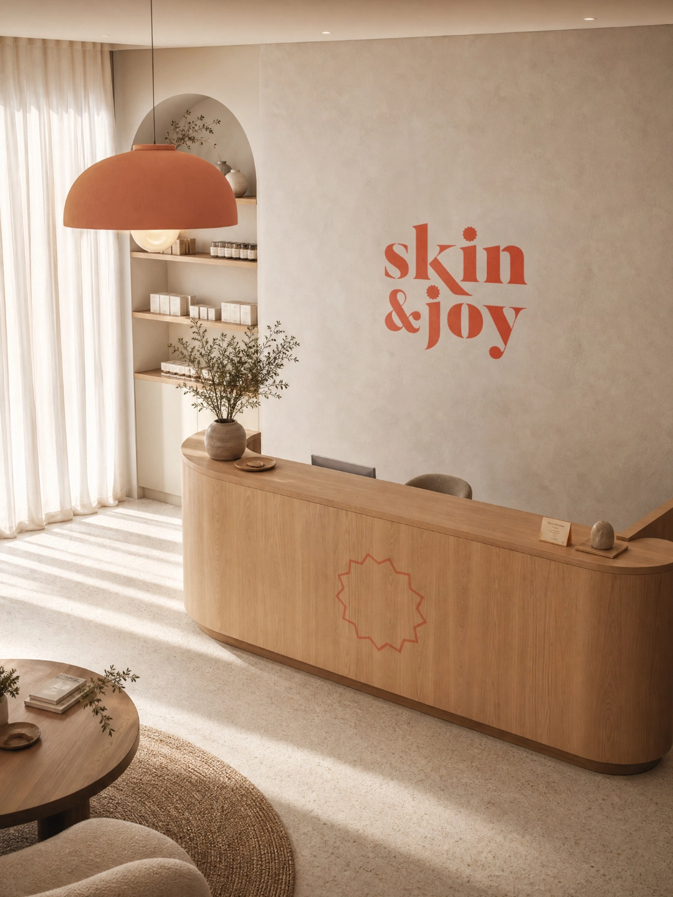
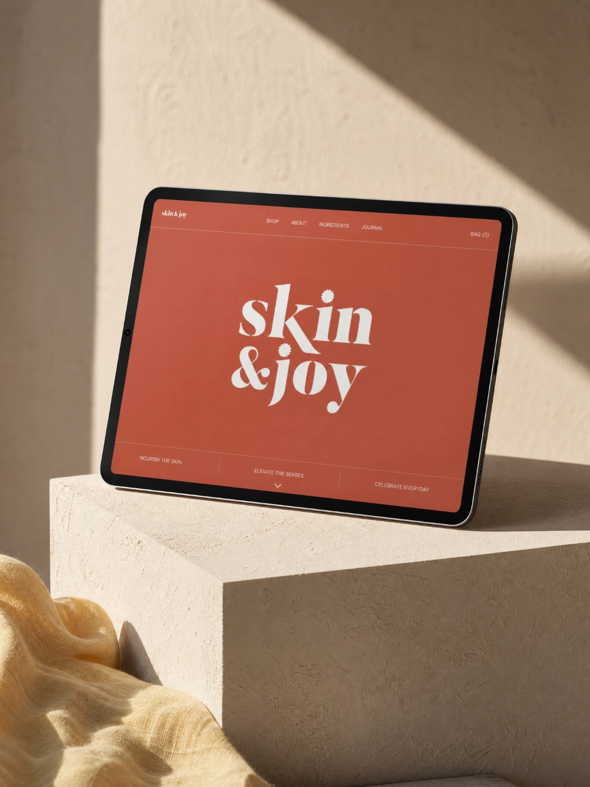
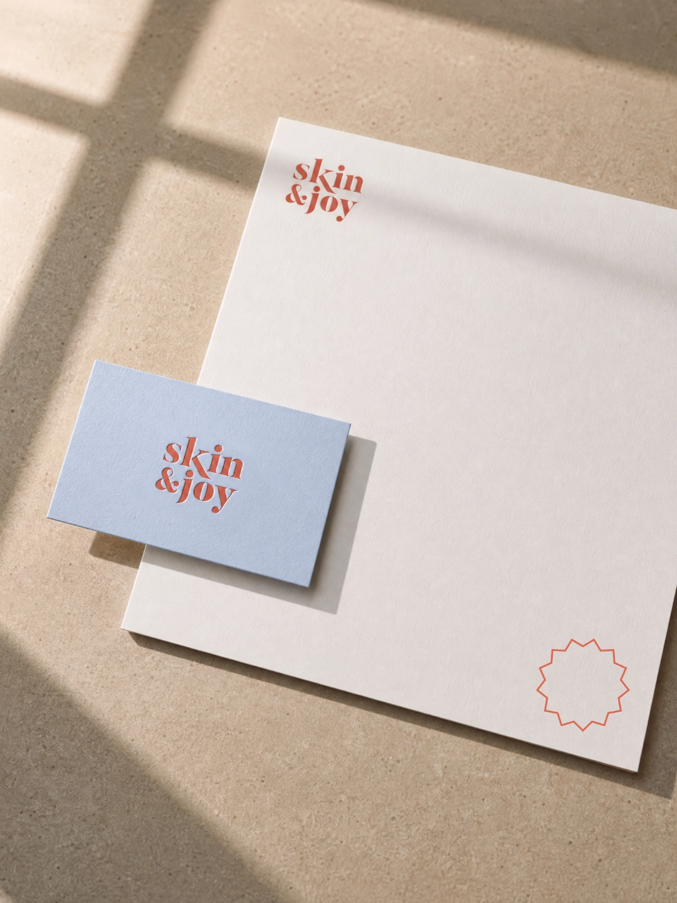
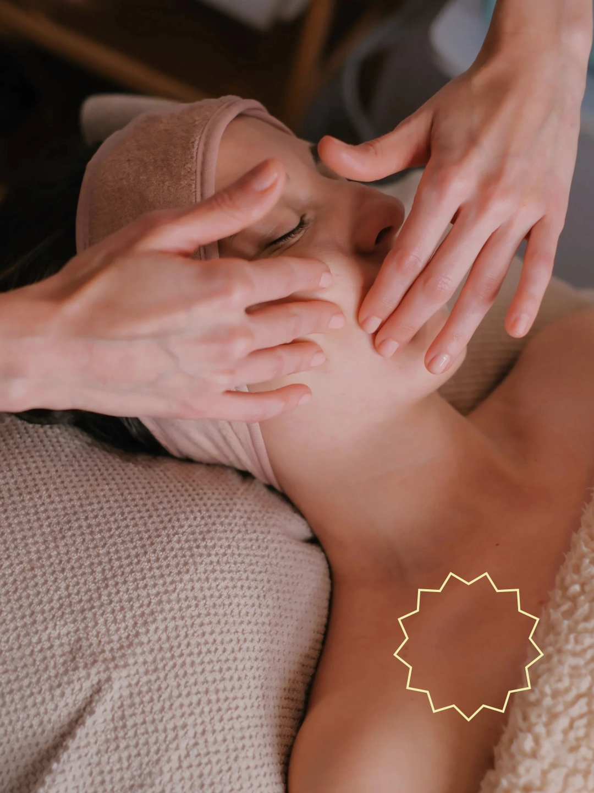
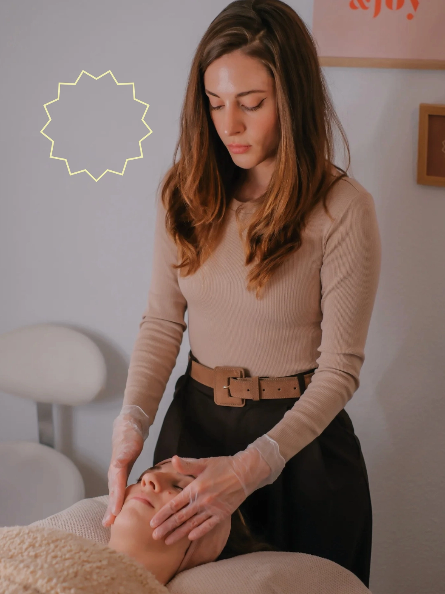
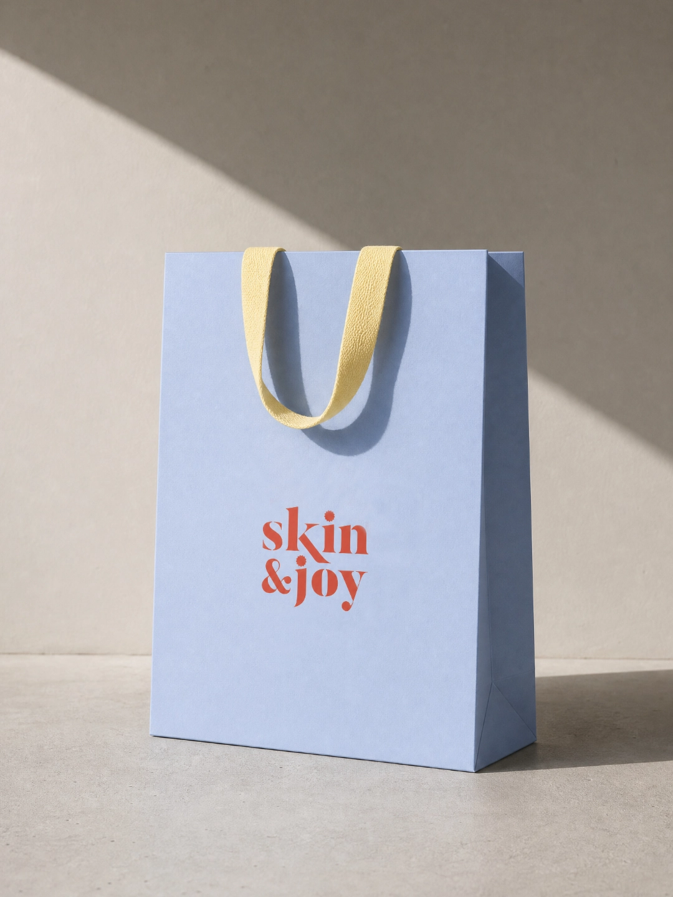
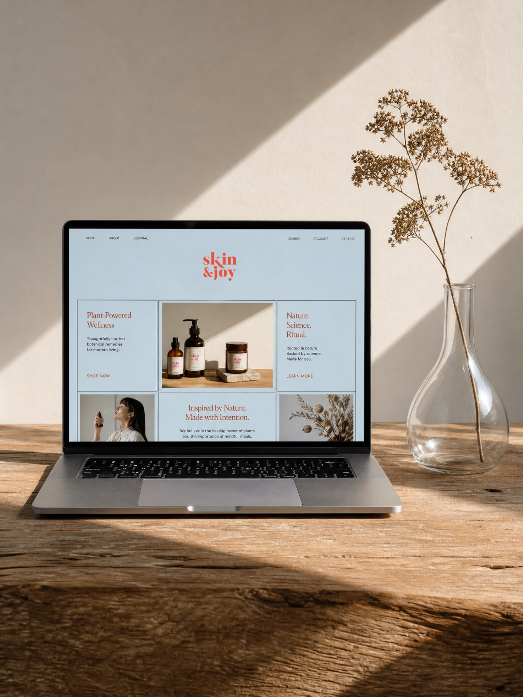
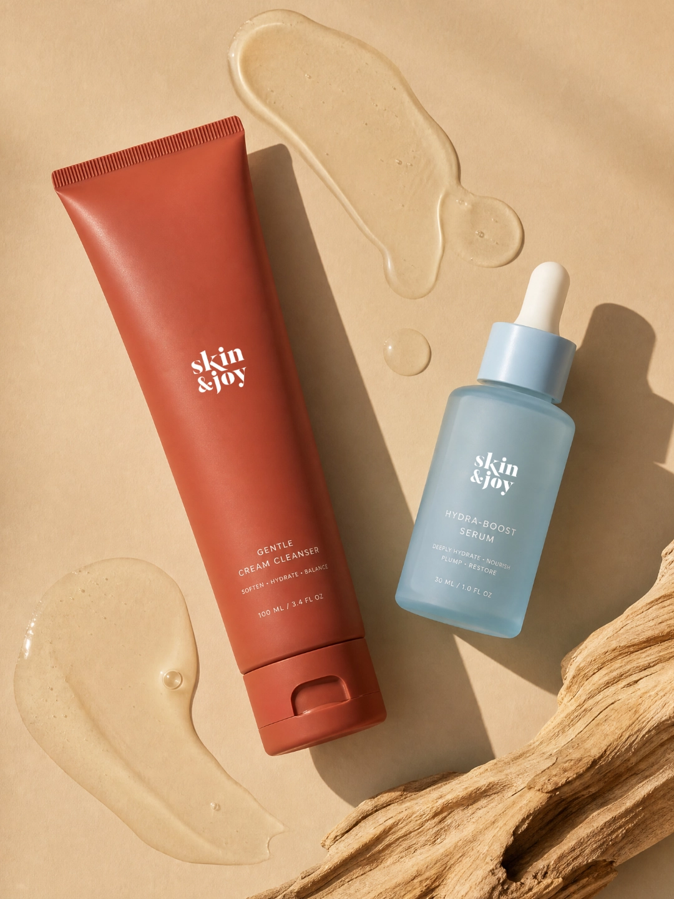
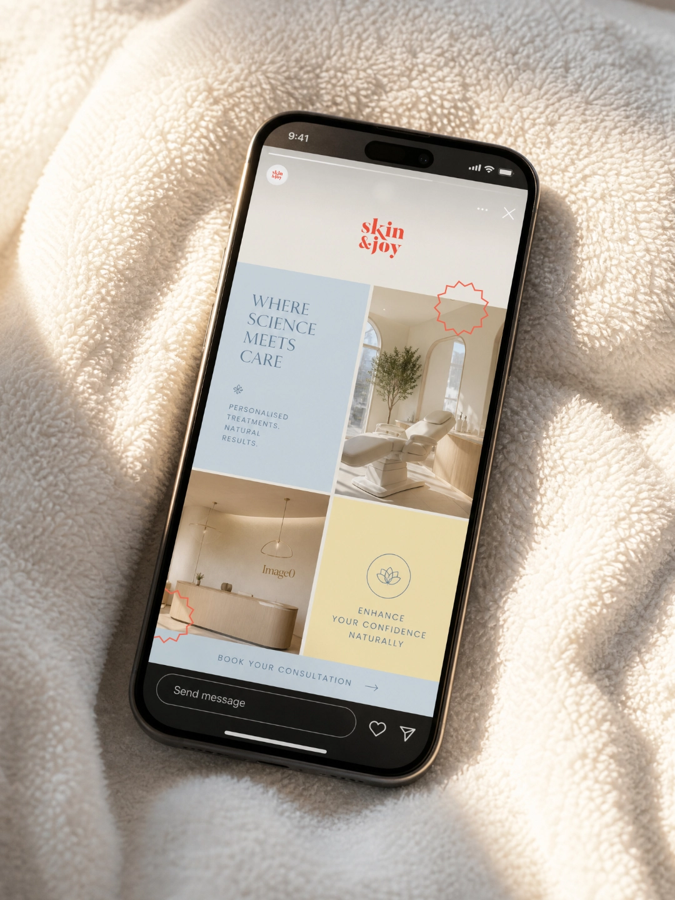

Creation of the visual identity for Skin&Joy, a new skincare studio. The challenge was to build a brand that conveyed self-care, quality, and delicacy without relying on the visual clichés commonly associated with the beauty industry. Inspired by the founder’s personality, we developed a fresh, radiant identity with a playful touch, reflecting both the professionalism of the service and the positive experience at the heart of the brand. A vibrant, feminine identity that celebrates healthy skin and a natural glow.
Creación de la identidad visual de Skin&Joy, un nuevo estudio de cuidado de la piel. El reto consistía en construir una marca que transmitiera autocuidado, calidad y delicadeza sin recurrir a los códigos visuales habituales del sector beauty. A partir de la personalidad de su fundadora, desarrollamos una identidad fresca, luminosa y con un punto divertido, capaz de reflejar tanto la profesionalidad del servicio como la experiencia positiva que propone la marca. Una identidad viva y femenina que celebra las pieles sanas y el glow natural.








